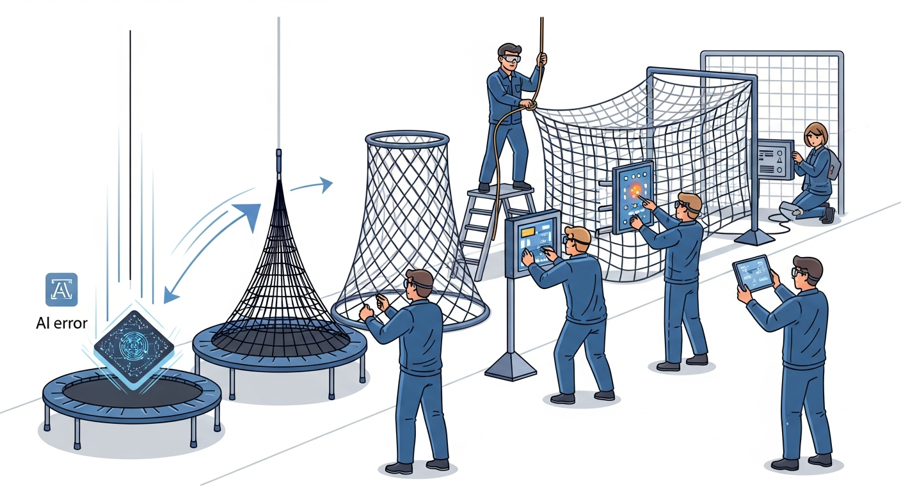

"When your AI product fails, how it fails matters. Well-designed guardrails turn catastrophic failures into graceful degradations. Poorly designed ones turn small failures into PR crises."
An Engineering Leader Who Has Seen Both
Building reliable AI products requires all three disciplines: AI PM defines what failures are acceptable and how the product should degrade gracefully; Vibe-Coding probes for failure modes and tests different response strategies; AI Engineering implements the validation, retry logic, and guardrails that protect users from failures.

Vibe-coding enables chaos engineering for AI systems. Deliberately trigger failures in your AI pipeline to see how guardrails, retries, and fallback mechanisms actually behave. Vibe-coding failure scenarios reveals whether your reliability patterns hold under realistic stress conditions, helping you identify gaps before users encounter them in production.
Build guardrails incrementally. First use vibe coding to probe potential failure modes and unintended behaviors. Generate test prompts that target the boundaries of acceptable output. Then formalize these into structured guardrail evals. Iterating on guardrails via quick eval tests is faster than trying to anticipate every edge case upfront.
Objective: Build AI systems with proper reliability patterns, including output validation, retry and fallback mechanisms, uncertainty-aware degradation, policy guardrails, and human escalation workflows that protect users and the organization.
Chapter Overview
This chapter covers the reliability stack for AI products. You learn how to validate structured outputs before using them, implement retry and fallback strategies that handle transient failures, build uncertainty-aware systems that know what they do not know, design policy guardrails that enforce behavioral boundaries, and create human escalation workflows for situations that require human judgment.
Four Questions This Chapter Answers
- What are we trying to learn? How to build AI systems that fail gracefully and maintain user trust even when things go wrong.
- What is the fastest prototype that could teach it? Deliberately triggering failures in your AI system to see how it degrades and whether recovery is possible.
- What would count as success or failure? Systems where AI failures result in graceful degradation rather than catastrophic user-facing errors.
- What engineering consequence follows from the result? Reliability patterns (validation, retries, guardrails, escalation) are not optional add-ons; they are core product requirements.
Learning Objectives
- Validate structured outputs from AI systems with confidence
- Implement retry strategies with exponential backoff and idempotency
- Build fallback mechanisms that maintain system utility during failures
- Detect and respond to AI uncertainty appropriately
- Design policy guardrails that enforce behavioral boundaries
- Create human escalation workflows for high-stakes situations
Sections in This Chapter
Defense in Depth
No single reliability technique prevents all failures. The most reliable AI systems combine multiple layers: validation catches malformed outputs, retries handle transient failures, uncertainty thresholds flag low-confidence responses, guardrails enforce policy boundaries, and human escalation handles edge cases. Build layered defenses like you would for critical infrastructure.
Role-Specific Lenses
For Product Managers
Reliability patterns define what happens when things go wrong. Understanding these patterns helps you set appropriate expectations for AI feature behavior, define acceptable failure modes, and make informed tradeoffs between capability and reliability.
For Engineers
You implement the reliability infrastructure that protects the system. This includes validation libraries, retry logic, fallback handlers, guardrail frameworks, and escalation workflows. Reliability code is production code that deserves the same rigor as feature code.
For Designers
Reliability patterns inform how you communicate AI limitations to users. Understanding uncertainty thresholds helps you design appropriate confidence indicators and fallback messaging that keeps users informed without losing trust.
For Leaders
Investment in reliability infrastructure has clear ROI. The cost of implementing guardrails is trivial compared to the cost of a PR crisis, regulatory action, or customer loss from AI failures. Reliability is not overhead. It is risk management.
Bibliography
Reliability Patterns
-
Rebedant, D., et al. (2023). "Reliability Engineering for AI-Enabled Systems." arXiv:2305.18090.
Extends classical reliability engineering principles to AI-specific failure modes and mitigation strategies.
Guardrails and Safety
-
Practical approaches to implementing guardrails that prevent harmful outputs while maintaining system utility.